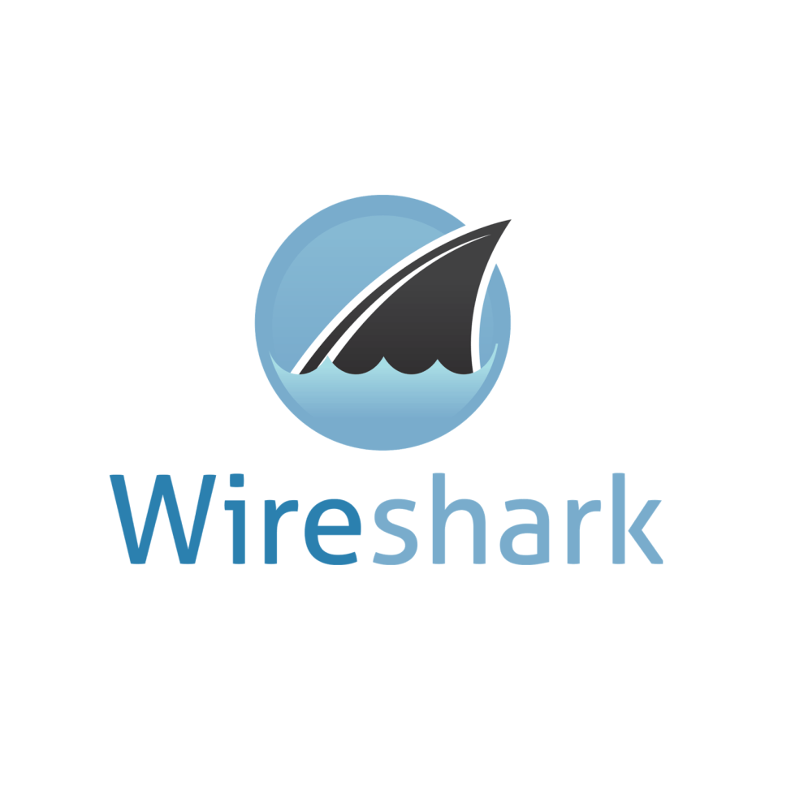

Welcome to the Wireshark Lecture Review!

In this lecture we will cover the topics discussed in Lecture 3. The focal point of lecture 3 was Wireshark.
Now let's get stuck in!
What is Wireshark?
Wireshark is a free and open-source packet analyzer. It is used for network troubleshooting, analysis, software and communications protocol development, and education.
Wireshark lets the user put network interface controllers into promiscuous mode (if supported by the network interface controller),
so they can see all the traffic visible on that interface including unicast traffic not sent to that network interface controller's MAC address.